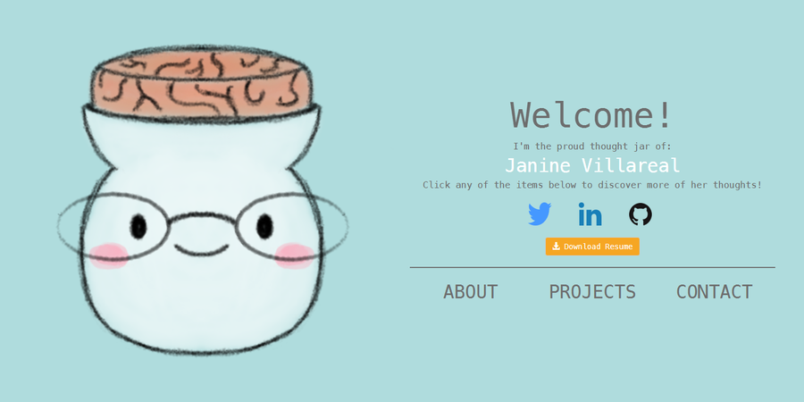

First Personal Website: Feb-April
Put overview of project here
FEB.8-21, 2017 - Strategy, User Research, Prototyping
Before working on anything else, I first started with a strategy. I needed to establish steps that would enable me to reach my goal. My goal being to showcase my best work. Show others what I know and have learned, and to share my personal and professional growth. Since it was my first time deploying a product on my own, I had limited knowledge as to how formal strategies are developed so I made a simple one. My strategy was understanding and applying UX Design concepts, keeping the focus on the user, asking questions, and learning as much as I can. Honestly the task seemed daunting, but I knew it was manageable. With a strategy in mind, I started by asking some questions. These questions were:
- What is the purpose of my web site? What is my objective for having it?
- Who am I talking to?
- Depending on who is reading, how much and what content is adequate content?
Answering these questions were my first priority. The answer to no 1. is to showcase my work in a way that'll entice others to collaborate with me, hire me, and attract like-minded individuals to connect with me. It also doubles as a learning experience and to gain more knowledge and experience in UX/UI Design, Web Design, and Web Development. The answer to no 2. and 3. required more work. I relied on the power of observation. I observed a small group of people which consisted of a couple of friends, a UX Designer, and an HR assistant. I observed:
- How an HR asistant would go about recruiting new people. The kinds of questions they want answered when browsing work someone has done. The qualities that potential employees show through their work, resumes, and LinkedIn profiles.
- How a UX Designer finds people they would want to start a project with and even observed how they look for places they would want to work or companies hey would want to work for.
- I observed how friends reacted to different UX design portfolios and the kinds of feelings that they experienced while browsing their work.
I found that I am primarily talking to:
- Future collaborators. People who would want to work with me. For them they're looking for someone who is curious, open-minded, a good listener, gives and expects trust, and builds relationships.
- Recruiters. They know what they want. Depending on who is asking for the talent, it may vary as to what qualities a candidate must show in their work, resume, and profiles. Depending on the company culture, they primarily want to see if that person is a good fit for their company. Someone who shares the same values and clearly shows that in their work.
- Future clients. They want someone that they can trust to see a project through. Someone who they believe can do the work that they want done and within a certain time period.
- Like-minded individuals want someone they feel comfortable enough to approach and get to know. Someone who they think would provide meaningful conversations.
With these questions answered I proceeded to prototype. Naturally I started with low-fidelity prototypes since it's fast and easy.
I wanted to choose a layout that was simple and had a blanced flow. It was a difficult task.
Thinking of where to start initially was especially difficult, but that's why I found a new appreciation for iteration.
Iteration reminded me that you don't need to stick to the first thing you see and that there may be better solutions available.
1st Iteration: For the first iteration for the ABOUT section I wanted to lay out the information that was easy to find and in the order that I thought would make sense when read.
However, a downside to this design is that for the about page the user needs to scroll quite a ways for them to get to the bulk of the information.
Then when they do get to the carousel they still need to scroll to read the information on it.
...project page
...contact page

2nd Iteration: For this second design talk abotu the scrolling thing

3rd Iteration: Go back to the scrolling information but it was for tid bits of

Eventually, I chose one that best fit my vision and one that addressed any objections that users/readers/guests may have.

I chose this layout for my web site because it was simple and had a balanced flow.
I felt that with this layout users would easily find information that they want to see. It's also relatively easy to get around from one page to another.
After I chose a layout I proceeded to create medium-fidelity prototypes using Sketch. For the medium-fidelity prototypes I wanted to focus more on the content.
I thought that for content it was best to keep it short, sweet, but meaningful (Especially for the ABOUT section).
For employers I thought this would be beneficial because of how it was kind-of like a resume.
A quick glance is all they would want right? Not exactly, this thought will later reveal itself to be somewhat misguided.
Anyways, after a couple of iterations - and making sure to keep the look simple, clean, and have content that's easy to digest- I finally found the look I wanted.
[PDF of all artboards created on Sketch ]({{ site.url }}/files/personalweb/medfiprototype.pdf) to show most of the interactions for my web site.
Reading the content and seeing how it would look and feel. I felt that the design captured the feeling I wanted my users to experience.
I wanted them to feel welcomed, find it easy to navigate from page to page, and for my users to find the information that they're looking for quickly.
Overall, I wanted the users to feel like they had a good time while they were on my site.
FEB.22-27, 2017 - Implementation, Web Site Deployed
Implementation was the most work intensive because I had to read a lot of material in order to achieve the desired look and feel of my web site. One major difficulty was recalling every thing I had learned about HTML, CSS, Bootstrap, and JavaScript. I also wanted to try and optimize as best as I can to try and decrease the amount of time a user has to wait for a page to load. On Feb. 28, 2017 I deployed the website.FEB.28, 2017 - User Testing, Changes
Shortly after deploying my web site I sent out my url to various friends, family members, and a couple of UX Designers. I wanted to test how easy it was for users to find information they're looking for and to navigate around the web site, if all elements such as buttons, links, hamburgers/accordians are being used properly and how they're intended to be used. I also wanted to test the overall satisfaction of the user using the web site(basically how their journey was using it). Deploying my web site I knew that it wasn't perfect, but I had at least hoped that it was decent and had accomplished what I had in mind. However, that was not the case. Yes, there was positive feedback but what I failed to realize was that there were still a lot of issues with my design. The main issues were:
- For mobile, my web site was not usable at all. Not usuable in a sense that users found the navigation to be all over the place for the WELCOME and ABOUT page. The text for the project page was too large that it didn't entice people to read the content. The "Read More" button doesn't instantly scroll the content down and people didn't bother reading all of the content for projects because they thought the button was broken (which it was not, you just had to tap twice, but I should not have assumed people to know that).
- From a UX Designers perspective some comments were that the content on my project page failed to tell a story. It didn't take the user from point A to B, and only gave a brief overview of the project. They mentioned that if they were an employer or collaborator and they looked at my work,they would not hire me because a UX Desiger has to be able to take the user and client through a journey. Take them through the process and help them understand. The work should also showcase my problem solving skills.
- The contact form was also suspicious because apparently they were getting a warning message that it made people shy away from the web site in fear of getting a virus. Insitlling fear in my users was not a feeling I had wanted to introduce let alone end their experience with.
Challenges, Results, & Take Away
After the last couple of changes though, I left my web site for a while and see how it did and waited for more feedback. While collecting data and occasionaly reviewing them, I was also working on other projects like my Daily-UI project, reading more on UX/UI Design, and practicing some JavaScript. During that time I had read and learned more about UX/UI Design and saw that from a UX perspective it wasn't enough. I started to re-think that the web site I had didn't really showcase my skills and knowledge so I started thinking of redesigning. This time re-design equipped with more knowledge about UX/UI Design, Web Design, and Web Development. Challenges that I faced during this project was...doubting own design decisions when you have no one to ask or no users to consult with. hard to find the right kind of users and what the proper questions to ask are Overall, the result of this project was that I felt that more people took me seriously? That people saw potential in my work (even though I know I have a long way to go), some people were genuinely nice and decided to connect with me to further help me and answer any questions I may have about UX design and front-end development. In all honesty I have learned a lot just from this one project. Learned that sometimes you have to let the user choose what's right for them, not what you think is right for them. Iteration is great, you get to catch some mistakes before you even expend time and energy implementing them, there are many ways to approach a problem and there are different ways to solve them and different solutions that can be provided.